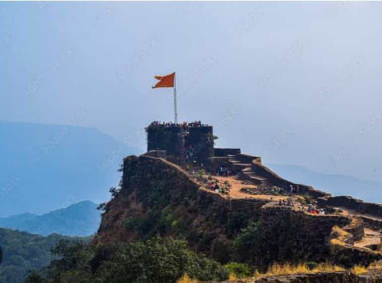

BACKPratapgad Fort

>
The fortress of Pratapgad was completed in 1656 under the orders of the Maratha king Chhatrapati Shivaji. The construction of the hilltop stronghold turned out to be an inspired piece of strategy, as just three years later it played a pivotal role in the Battle of Pratapgad, a turning point for the fledgling Maratha.